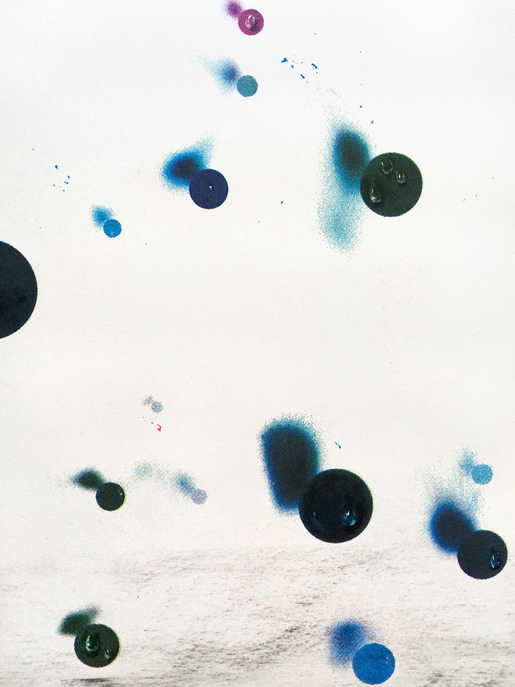
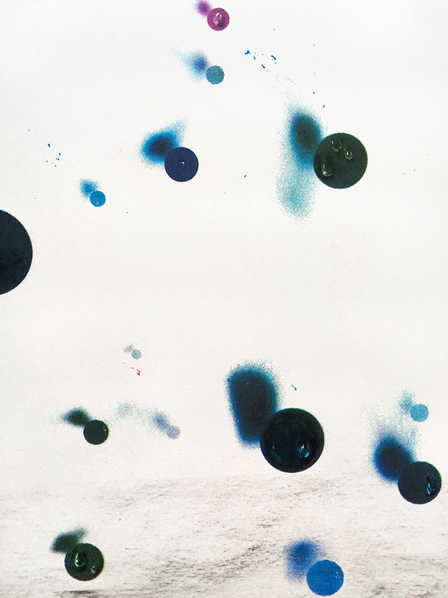
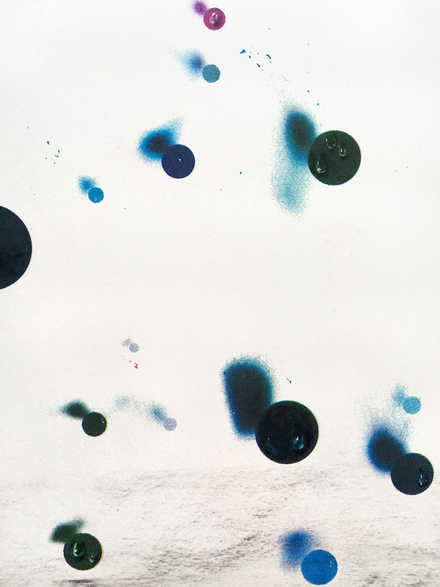

Chloe Scheffe
Graphic design,
etc.
Flight #1, #2, #5
Drawings on plain or laser cut paper (charcoal, areas of screenprinting and oil painting)
15 x 22" each
2015
This series is an exercise in intuitive making, apart from an imposed brief and the slick perfection of design software.
Shown at
Final
draft
, RISD Graphic Design Senior Show, Woods-Gerry Gallery, 2015



 
